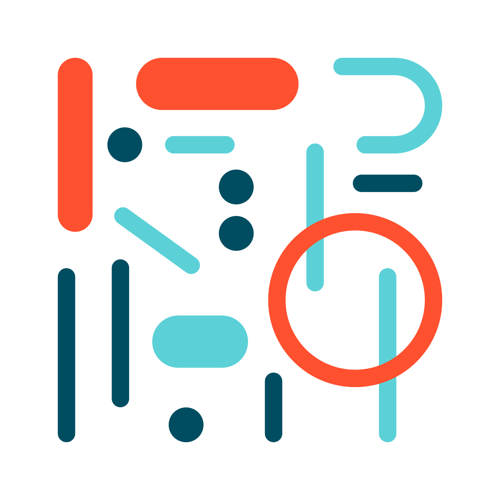
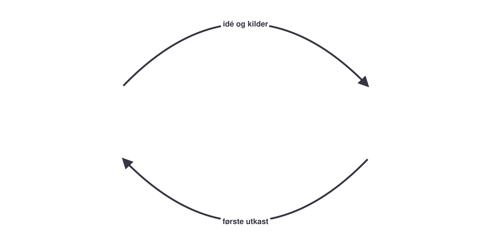
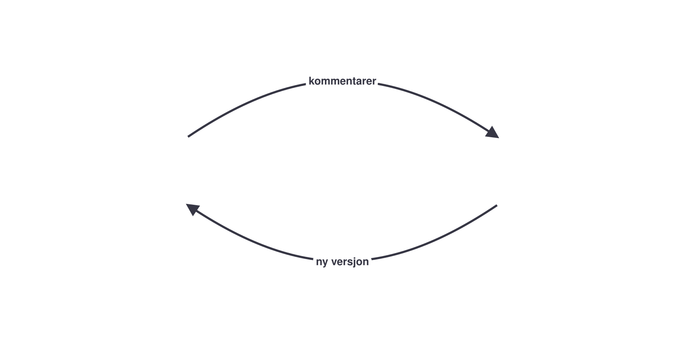
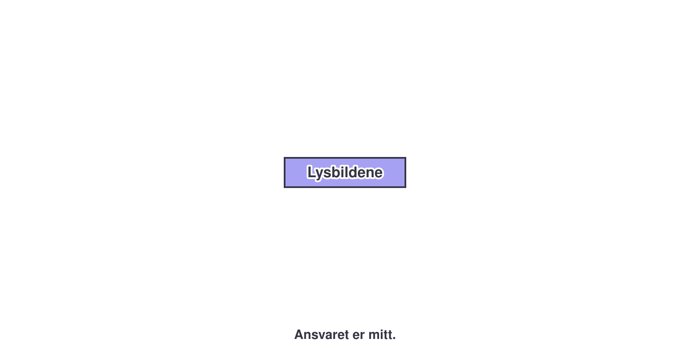

Transparens er ikke så vanskelig
Vi har alt vi trenger for fornuftig bruk av KI
Forum for forskningsetikk · Universitetet i Oslo · 12. november 2026
Professor i musikkteknologi, Universitetet i Oslo
fourMs-laben, siden 2004

RITMO, senter for fremragende forskning, 2017–2027

MishMash, senter for KI og kreativitet, fra 2025
1
Veiledning er kvalitetskontroll
2
Dokumenter prosessen
3
Vurder prosessen
Mer radikalt
Andre måter å vurdere på
- En fortellende CV i stedet for en publikasjonsliste
- Loddtrekning mellom søknader som står likt
- Vurderte forhåndstrykk uten ja eller nei
- Publisering i deler: spørsmål, metode, data, analyse
- Ingen tidsskriftsrangering i vurderingen
4
Kjenn modellen
For stipendiater og veiledere
Tre råd
1Avtal tidlig hva som skal logges
2Bruk verktøyene som finnes, og la agentene rydde
3Vurder prosessen og helheten, også muntlig



